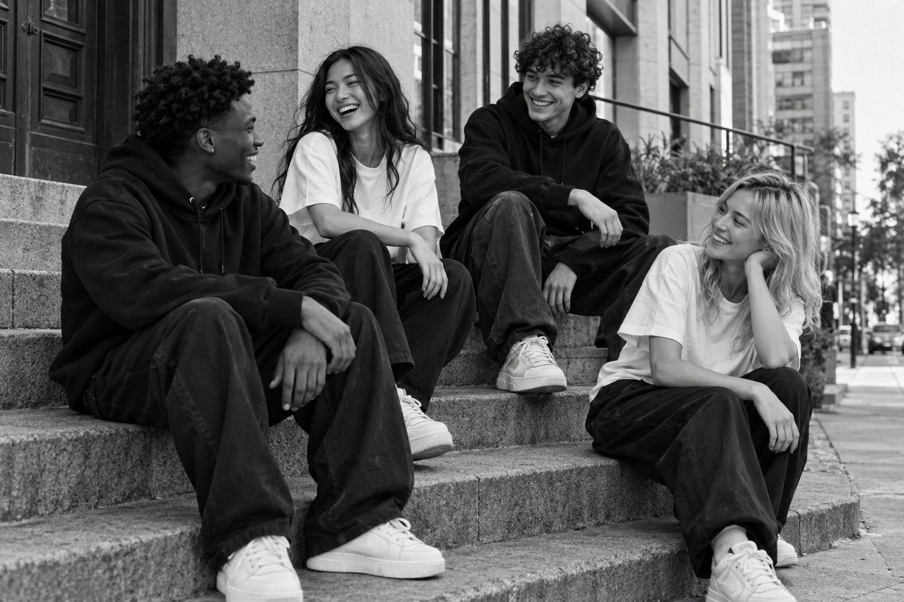

Corban / The movementLive with
Live with
purpose.
What we wear is an expression.
How we live is the offering.
Rooted in faith. Lived every day.Scroll to explore ↓
A way of life.
An everyday offering.
Corban means “that which is brought near.” For us, it is an invitation to live with intention—to give, to grow, and to show up for the people around us.
Our story ↗01
Love in action.
Let care become something people can see. Give your time. Share what you have.
02
Purpose over perfection.
We are still growing. What matters is the choice to keep moving toward who we are called to be.
03
Show up for others.
Use your gifts to serve. Make room for people. Turn everyday opportunities into something meaningful.

02 / This is CorbanDifferent stories.
Different stories.
Shared purpose.
A movement made of people. Of ordinary moments, honest conversations, and the way we choose to treat one another.
What brings us together ↗“Let’s not merely say that we love each other; let us show the truth by our actions.”
1 John 3:18